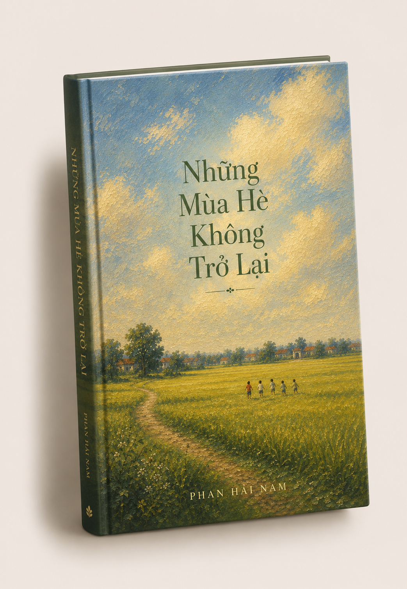

Những Mùa Hè Không Trở Lại
Có những ký ức càng đi xa càng trở nên trong trẻo. Chúng nằm lại đâu đó giữa những năm tháng đã qua, âm thầm sống trong tiếng ve, trong màu nắng cũ và trong những gương mặt từng rất thân quen. "Những Mùa Hè Không Trở Lại" là một lời nhắc nhẹ nhàng rằng tuổi thơ có thể đã ở lại phía sau, nhưng những điều đẹp đẽ nhất của nó thì chưa bao giờ rời đi.